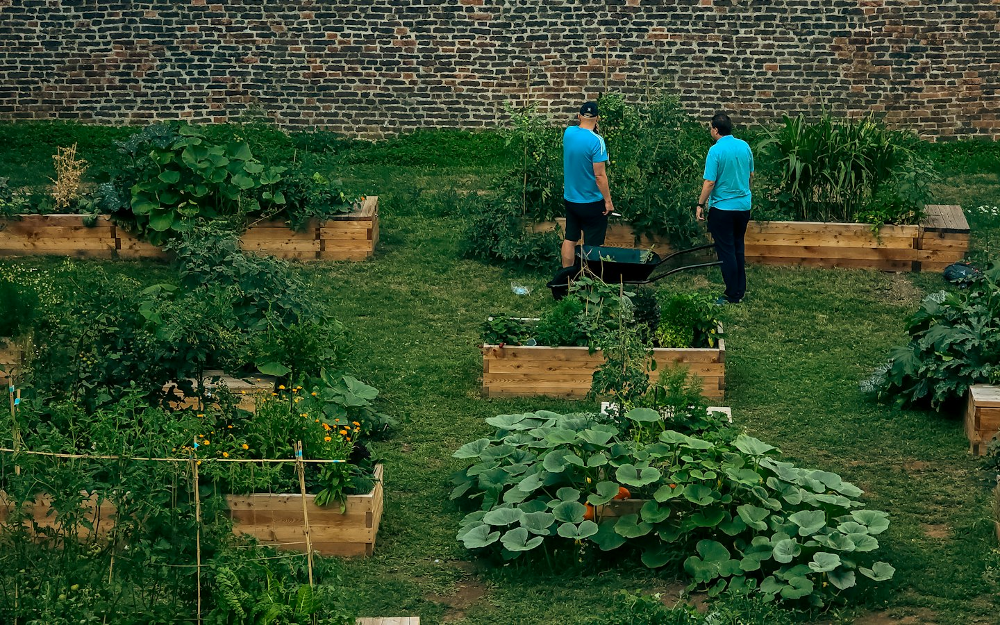

Alimento perto de casa
Hortas coletivas que aproximam comida fresca, conhecimento e autonomia.

COMUNIDADE • TERRA • FUTURO
A Casa Semente aproxima pessoas, alimento de verdade e natureza. Um canteiro de cada vez, fazemos do cuidado uma força coletiva.
Conheça nossas açõesUm espaço compartilhado, muitas mãos fazendo crescer.
Somos uma iniciativa comunitária sem fins lucrativos que cultiva vínculos e soluções locais. Acreditamos que acesso a alimentos frescos, espaços verdes e convivência transforma o cotidiano.
Veja o que fazemosTrês caminhos conectados para fortalecer o território e quem vive nele.
O PRÓXIMO PASSO É SEU